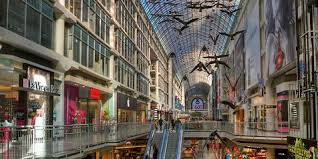
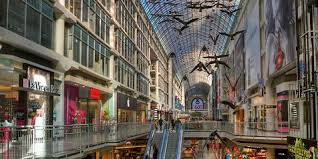

About Us
Richmond Station is a neighbourhood restaurant. We grew up with a passion for those romantic neighbourhood spots where you could reliably grab a bite to eat once a month, two nights in a row or whenever the fridge was bare. A neighbourhood spot means the owners are around most days, the staff maintain their position for years and there’s too many familiar faces to really just “be in and out”. Your favourite items never leave the menu and if they do, the chef wants to make it for you all the same.
WHERE IT ALL STARTED
We’re located on Richmond St, just a few doors west from the intersection at Yonge St. This is one of the busiest places in the city and the downtown core always seems to be developing more and more energy. In the early 1980’s, downtown Toronto was not really a hub for great restaurants. To eat well you either needed to sit down for a nice meal in one of the hotels, like The Sutton Place or The King Edward; unless of course you wanted to venture up to Scaramouche or Fenton’s. For decades, Canoe has been the beacon of eating out downtown, and so it remains. Richmond Station is blessed to be in the middle of a vibrant community of great independent restaurants like La Betolla di Terroni, Drake 150, and Lena.
THE NEW DOWNTOWN
What’s changed more than the restaurant options downtown is the amount of who live now downtown. In the 80’s and even 90’s, you could roll a bowling ball down Bay St during the weekend. Now the core is bustling with peopleshopping dining, watching live sports and touring the architecture. There are evenmore great hotels with the Shangri La and The St. Regis Hotel opening within the same year as Richmond Station. We really feel like our restaurant is in the heart of a vibrant city that seemingly continues to grow and thrive. welcome everyone and anyone that happens to be travelling through: having a business meeting, snacking before the Jays game, just back from a matinee at the opera, shopping at The Eaton Centre. Or maybe you just live around here.
Richmond Station opened in October 2012. The first meal we ate here was a Thanksgiving dinner, together as a staff. Our moms and dads were milling about helping to clean, paint and be enthusiastic. We cleared away enough construction site to push a dozen tables together and even today we can’t remember what we ate. The food was important, but getting to know each other seemed a higher priority. That first meal will forever be among our most favourite.
 
